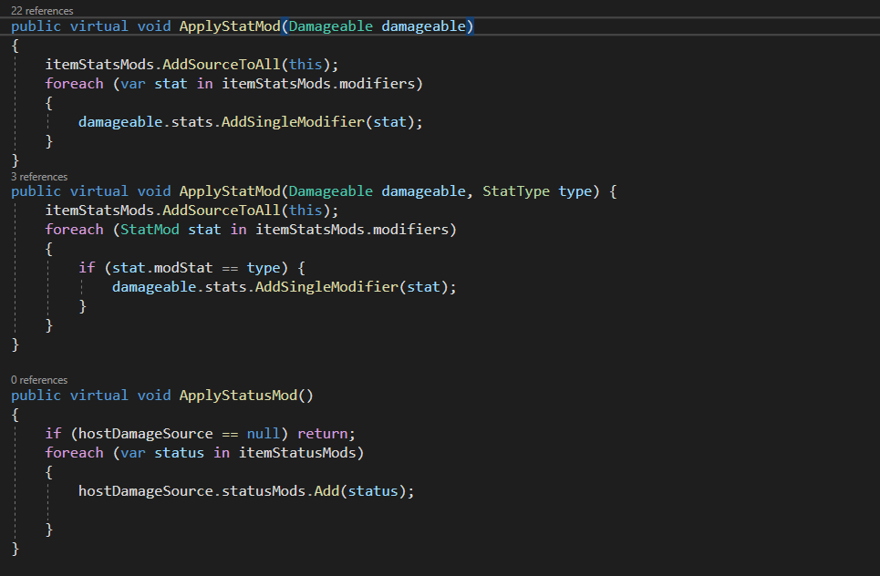
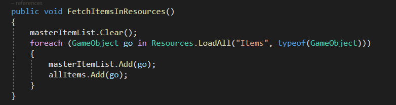
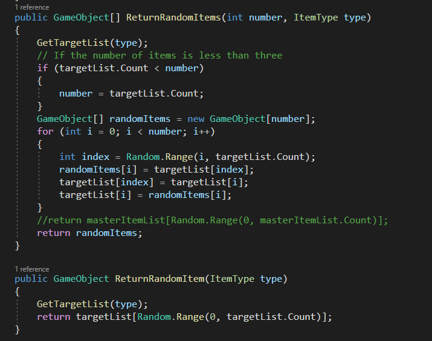
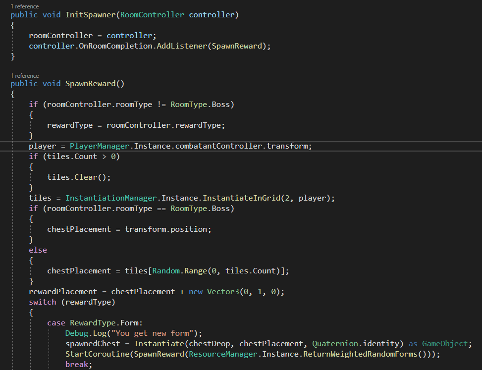
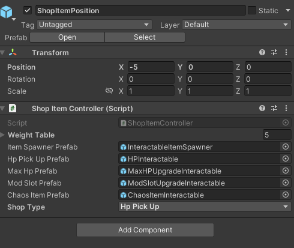
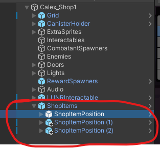
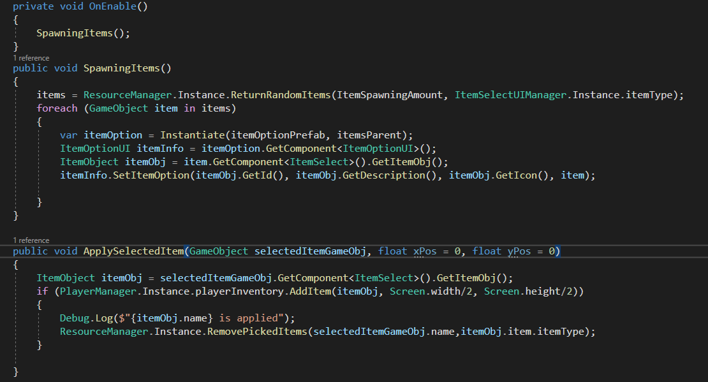
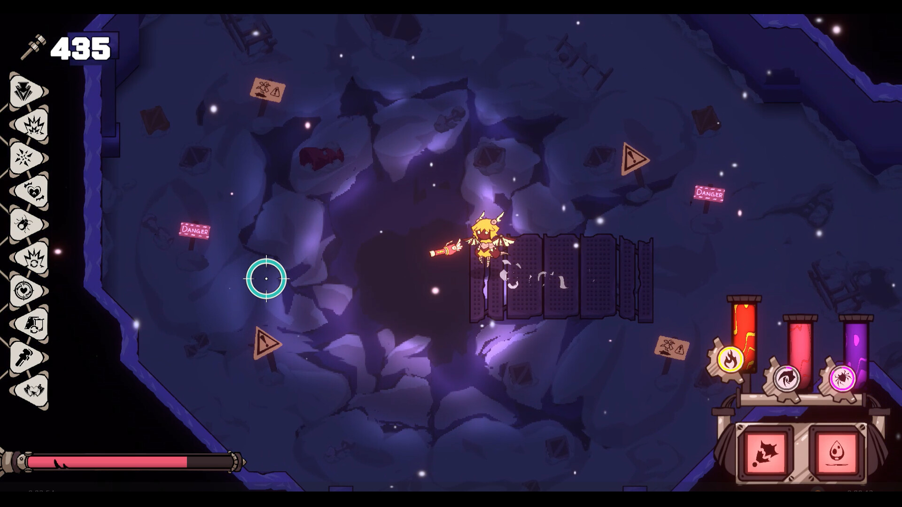
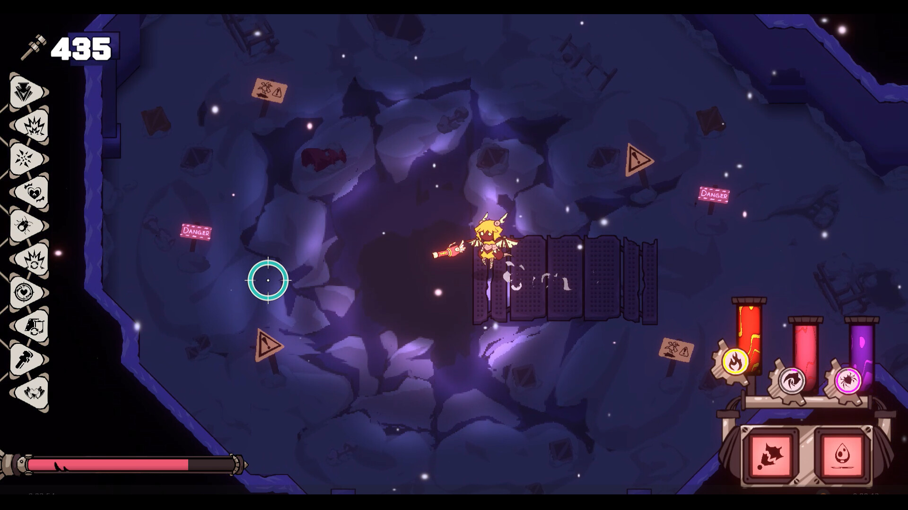

In Dracomaton, items play a crucial role by introducing both positive and negative effects on
players that significantly impact gameplay.


My responsibilities involved establishing the foundation for the item system. This encompassed
creating a framework for generating new items, adding distinctive effects to each item, and
implementing the mechanics for applying these effects to the player. To achieve this, I used
Unity's ScriptableObjects to devise a base class, BaseItem, which serves as the base prefabs for
all future items. Each base item owns unique attributes such as id, icon, and employs Item Stats
Mods & Item Status Mods to manage its distinctive effects. When the Apply function in the base
item script gets called, it will add all the mods(aka. effects) to its host damage
source/damageable, mostly player.

Considering that designers will collaborate on items throughout the development, I designed a
user-friendly system that allows designers to swiftly test and tweak item attributes during
tests by adjusting parameters directly in the Inspector.

In Dracomaton, random objects need to be spawned on the map under different situations, for
example, shop items are randomly selected from all the items in the game. To address the random
spawning of objects, including shop items. This system organizes all game resources, such as UI
icons, Damage Text, and VFX, into a unified structure.
Resources Manager
The Resource Manager, implemented as a singleton class, efficiently fetches resource objects and
categorizes them based on type when awake.



For code clarity, I used partial class to separate the code into different files. Individual
resource managers also make generating a random object more easily by just calling the function
in the corresponding manager script, and programmers can create many single manager scripts
without complicated primary resources manager script.

Reward System
In Dracomaton, players receive varied rewards based on the type of room they complete,
for example, clearing a health room will reward the player a health portion.


The Reward Spawner selects the reward type based on the current room's type from reading the
current room controller, and the Reward Script ensures appropriate spawning within reachable
areas (e.g. avoid water area) near the player.


Shop System
As for the Shop System, I was responsible for offering three shop items (mostly the same object
as rewards) in the Shop room to players. One item is always a Health portion for game balance,
and the other is a random type of object (items, forms, etc).

A prefab with preset spawning methods facilitates the placement of shop items on the screen,
which can be easily placed in any position on the map. Shop Room Manager populates three shop
item positions, and the attached Shop Item Spawning Script manages object spawning on these
positions. The variable "Item Type" in the spawning script decides the type of spawned objects,
for instance, if item type is Random, it means this position will spawn a random object,
otherwise, it will only spawn the selected type of item.
 
Mod Menu
Mod Menu is the crucial game UI in Dracomaton. There are two types of slots on the menu: the
upper slots are Form slots, and the lower slots are Mods slots. The mechanics of Dracomaton is
that players can switch the form and mod by swapping their positions. For example, if players
drag Fire Form to the Construct Form’s mod slot, the code will automatically unequip Fire Form
and turn it into Construct Form’s mod.

I crafted this feature from scratch, integrating UI assets, functions, and connecting them to
backend codes. Consideration was given to various restrictions, such as preventing the same form
from being modded or equipped twice, ensuring the player understands our mechanics correctly.

Item Menu
Item Menu UI will pop out with three item options when the player clears an item room, and they
can read through the item description to select one to apply. They simply need to click the card
to use the item. If the item pool has less than three available items, it will only spawn two
items for selection.

Both the Mod Menu and Item Menu panels are toggleable.
 
